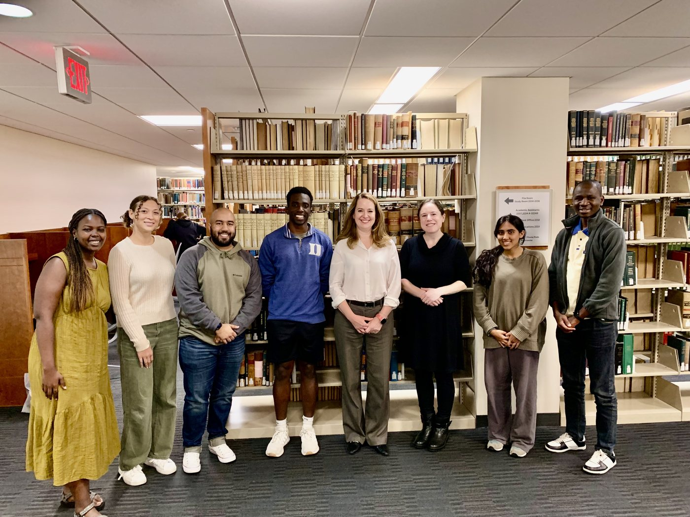
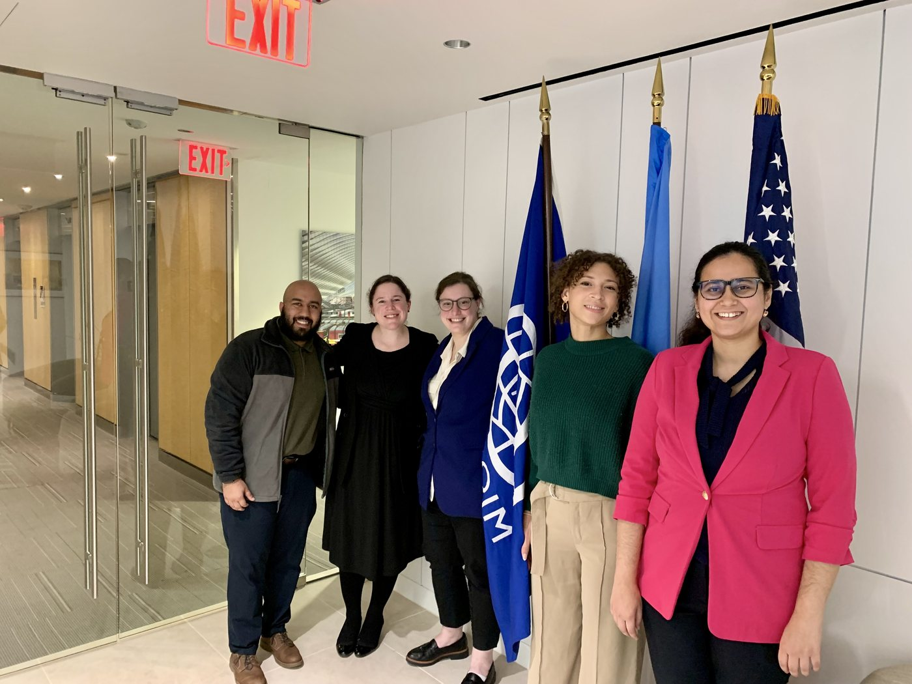
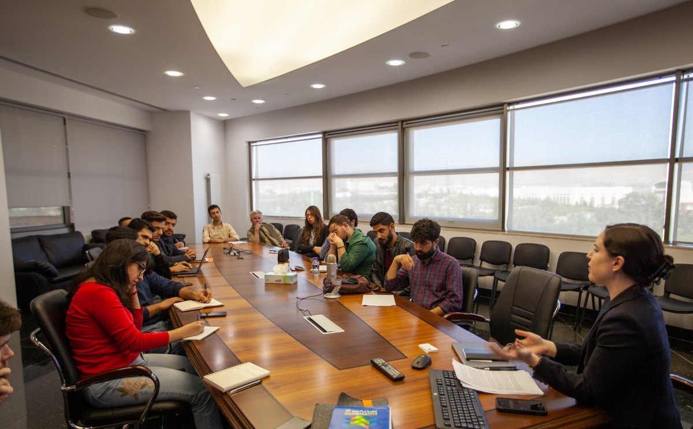

Evidence-Based Humanitarian Aid Delivery in South Sudan | LAW 644 (Bass Connections)
In partnership with the United Nations’ International Organization for Migration in South Sudan (IOM), this Bass Connections team works to make humanitarian aid delivery in South Sudan more effective and equitable.
Students refined a novel index that measures six dimensions of national-level “fragility”—societal, economic, political/legal, security, environmental/climate, and human—to inform humanitarian programming and policy in South Sudan. The index was successfully piloted in 2023 through a household survey of 2,200 South Sudanese respondents in four counties where the IOM is engaged in humanitarian and development assistance. Team members analyzed a second round of data and developed a matrix of evidence-based decision rules to advise humanitarian aid programming.
Learn more on the Bass Connections project page →

Team members with Amy Pope, Director General of the International Organization for Migration and a graduate of Duke Law School (’01), at Duke in fall 2024 (Revkin 2024)

Team members at IOM headquarters in Washington, D.C., December 2024 (Revkin 2024)
This team’s work was recognized with the 2025 Bass Connections Leadership Award. Read the announcement →
Transitional Justice and Peacebuilding in Practice | LAW 538
This seminar provides an introduction to the field of “transitional justice,” which refers to a broad range of processes and mechanisms that have been developed to respond to major violations of human rights that often occur during armed conflicts, under the rule of authoritarian regimes, or in divided societies where a dominant ethnic, racial, or religious group has systematically persecuted members of a minority or other marginalized group. Transitional justice seeks to achieve one or more of the following objectives depending on the context: providing redress for victims and accountability for perpetrators through judicial or non-judicial mechanisms, repairing damaged relationships between offenders and victims (also known as “restorative justice”), promoting peaceful coexistence between previously adversarial groups, truth-telling and memorialization of the historical record of human rights violations, and legal or political reforms that address the root causes of the conflict in order to prevent its recurrence in the future.
The seminar explores the importance of different types of data and evidence both for documenting international crimes and other forms of injustice and harm that transitional justice processes seek to address, and for empirically evaluating the effectiveness of peacebuilding programs that have been implemented in Iraq, Chile, and other contexts. It also engages with important critiques and limitations of the field. Students come away with a strong understanding of the primary tools and mechanisms for transitional justice (e.g., trials, truth and reconciliation commissions, compensation), key historical case studies including Iraq, Rwanda, and the United States, and important debates and critiques that have shaped the field.

Guest lecture at the American University of Iraq, Sulaimani in November 2019 (Photo: AUIS)
Property | LAW 170
Property law guides how we interact through and around a variety of valuable and increasingly scarce resources, including land, personal possessions, and ideas. This course explores how and why property is allocated; what default rights and obligations come with ownership; the role of private agreements with respect to property; and the extent and limits of the state’s power to set the terms of ownership. Throughout, we consider justifications for property rights as well as the fine-grained details of how courts and other institutions resolve conflicts about property.
There are a number of common threads that tie property law together, and a series of recurring themes emphasized throughout the semester. Among these, the most important are likely the relational and interdependent nature of property rights. As far as the law is concerned, property is not a “thing” like a piece of land, but a set of claims that some people have against others with regard to particular resources. Such claims are deeply contextual and relational; saying that someone “owns” something is generally the beginning, not the end, of the legal inquiry. Questions about the ways in which race, socioeconomic status, and gender have shaped property rights inform our conversation throughout the semester.
Recognition
2025 Bass Connections Leadership Award—Winner of the award recognizing outstanding faculty team leaders for creativity, intellectual vision, and student mentoring, for leading the Evidence-Based Humanitarian Aid Delivery in South Sudan team in partnership with the UN’s International Organization for Migration. Read the announcement →
2026 Collaborative Project Courses Faculty Fellow—Selected for the fourth cohort of Duke’s Collaborative Project Courses Faculty Fellows for LAW 538: Transitional Justice and Peacebuilding in Practice, in which student teams complete semester-long research projects for the International Organization for Migration. Meet the 2026 Fellows →
Faculty Perspective: Mara Revkin—An interview about leading the South Sudan project team and launching the Just Peace Lab, a new experiential class in which students work on real-world research projects for the IOM in Ethiopia, Mexico, Sri Lanka, and beyond. Read the interview →